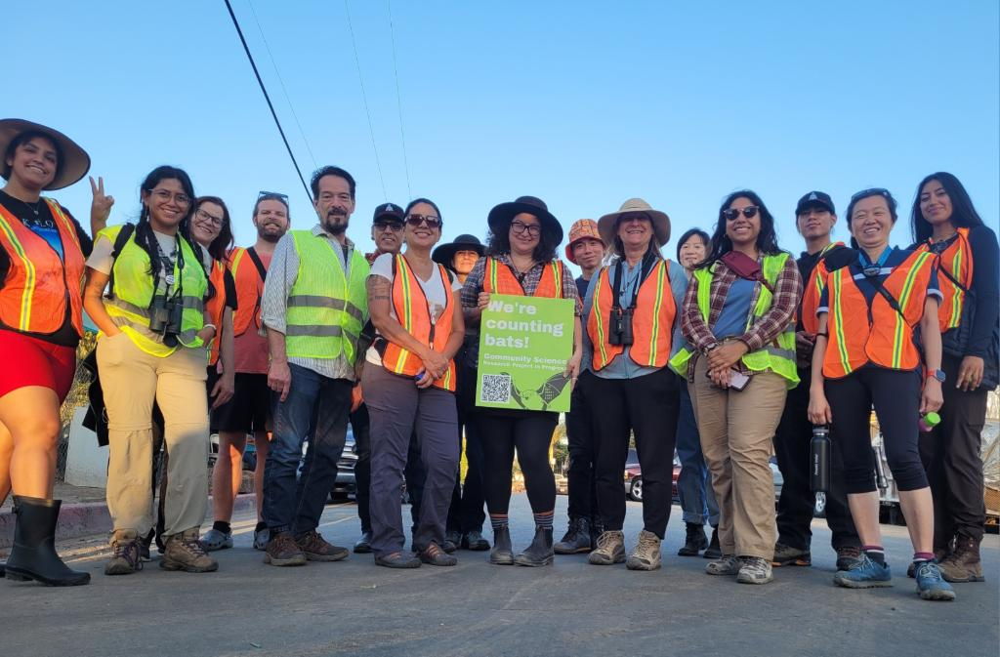
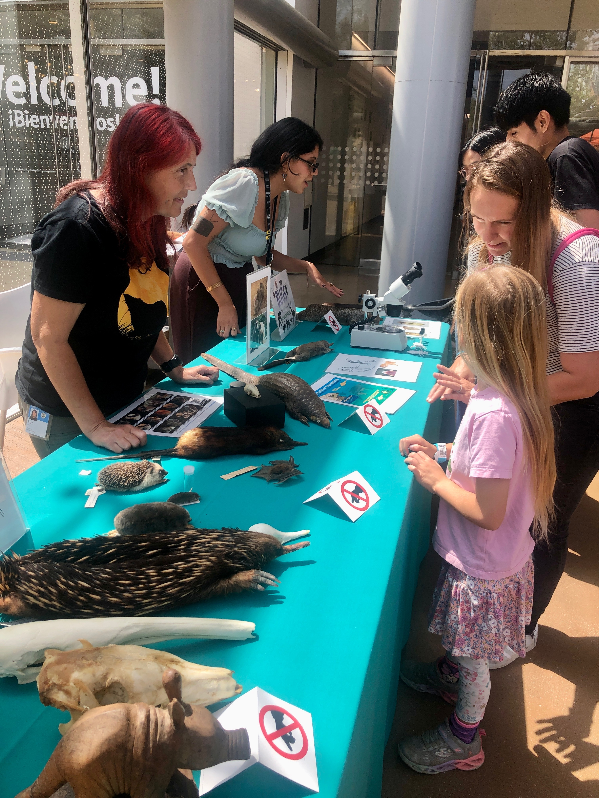
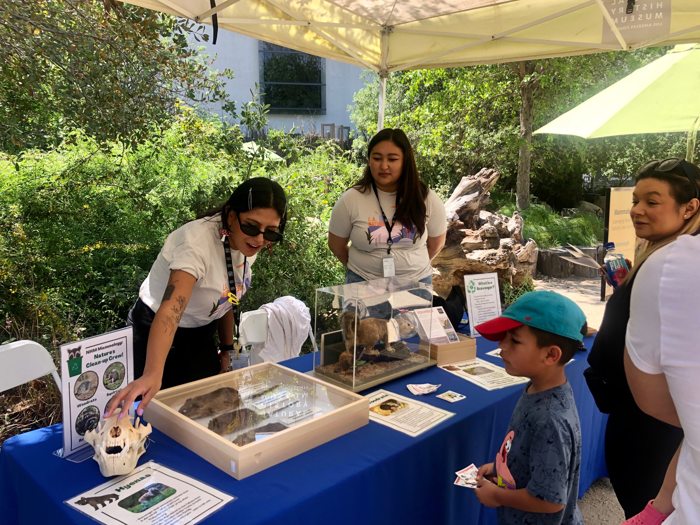

Museums provide excellent opportunities to engage with the public. A few past events include tabling about scavengers on Earth Day, insectivores and ectoparasites during Bug Fair, and helping with a bat roost count (a huge community science effort).



Learn about my background and how it influenced my journey into research in STEM.
Interview with Roots to STEM Podcast
The secret to kiwi survival: Could it be in their poo?
A sneak peak of the research Stanford University, Manaaki Whenua Landcare Research, and the National Kiwi Hatchery are conducting on kiwi gut microbiomes.
NZ Herald article